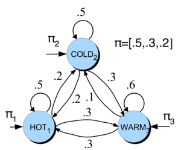
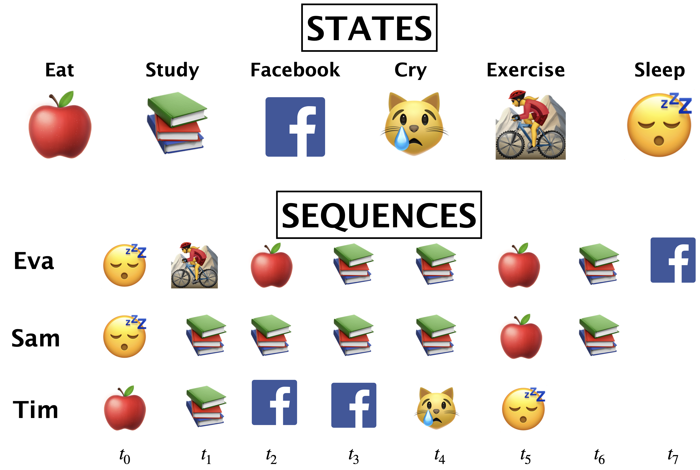
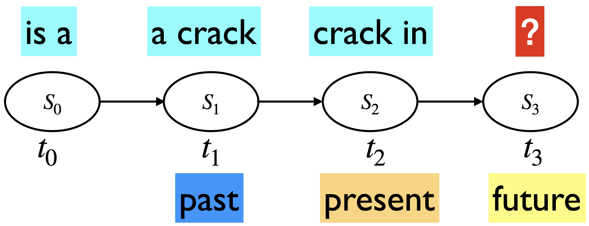
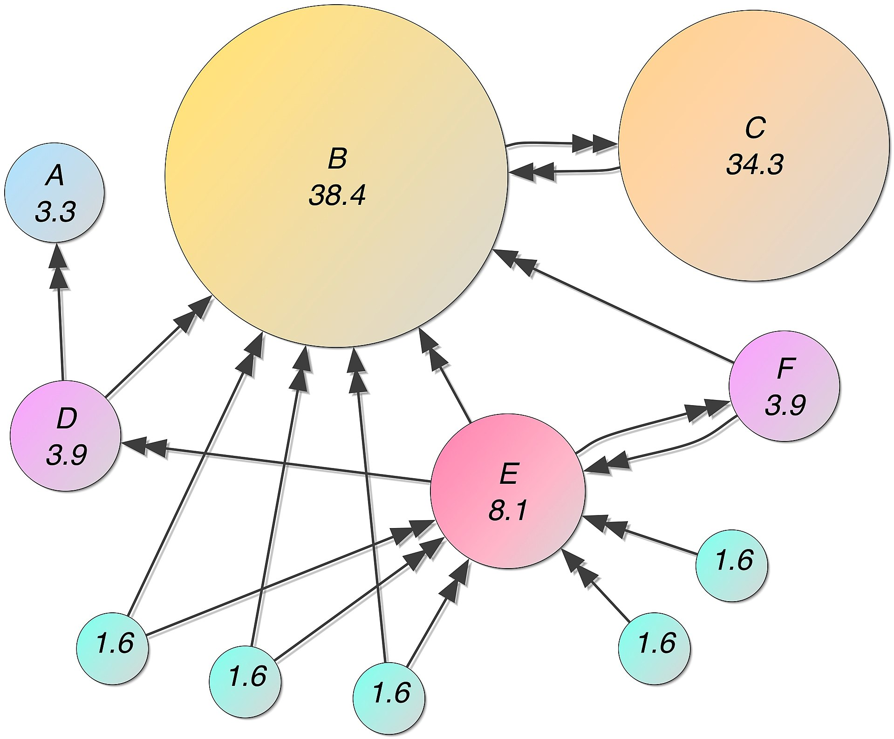

Lecture 2: Applications of Markov Models and Text Preprocessing#
UBC Master of Data Science program, 2023-24
Instructor: Varada Kolhatkar
Imports#
import os
import re
import string
import sys
import time
from collections import Counter, defaultdict
import IPython
import nltk
import numpy as np
import numpy.random as npr
import pandas as pd
from IPython.display import HTML
from nltk.corpus import stopwords
from nltk.tokenize import sent_tokenize, word_tokenize
Intel MKL WARNING: Support of Intel(R) Streaming SIMD Extensions 4.2 (Intel(R) SSE4.2) enabled only processors has been deprecated. Intel oneAPI Math Kernel Library 2025.0 will require Intel(R) Advanced Vector Extensions (Intel(R) AVX) instructions.
Intel MKL WARNING: Support of Intel(R) Streaming SIMD Extensions 4.2 (Intel(R) SSE4.2) enabled only processors has been deprecated. Intel oneAPI Math Kernel Library 2025.0 will require Intel(R) Advanced Vector Extensions (Intel(R) AVX) instructions.
Learning outcomes #
By the end of this class you will be able to
Explain learning of Markov models.
Given sequence data, estimate the transition matrix from the data.
Build a Markov model of language.
Generalize Markov model of language to consider more history.
Explain states, state space, and transition matrix in Markov models of language.
Explain and calculate stationary distribution over states in Markov models of language.
Generate text using Markov model of language.
Explain the intuition of the PageRank algorithm.
Carry out basic text preprocessing using
nltkandspaCy
Recap#
In this course, we explore models specifically designed to model sequences effectively.
We started simple with Markov models.
Markov assumption: The future is conditionally independent of the past given present
 $\(
P(\text{everything} \mid \text{a crack in}) \approx P(\text{everything}\mid\text{in})
\)$
$\(
P(\text{everything} \mid \text{a crack in}) \approx P(\text{everything}\mid\text{in})
\)$
Markov model definition
A set of \(n\) states: \(S = \{s_1, s_2, ..., s_n\}\)
A set of discrete initial probability distribution over states \(\pi_0 = \begin{bmatrix} \pi_0(s_1) & \pi_0(s_2) & \dots & \pi_0(s_n) \end{bmatrix}\)
Transition probability matrix \(T\), where each \(a_{ij}\) represents the probability of moving from state \(s_i\) to state \(s_j\), such that \(\sum_{j=1}^{n} a_{ij} = 1, \forall i\)
In our weather toy example:

Markov model tasks: We can do a number of things with Markov chains
Estimate the probability of a sequence:
Estimate the probability of being in a particular state at time \(t\). $\(\pi_0 \times T^{t}\)$
Estimate stationary distribution which is a probability distribution that remains unchanged (\(\pi T = \pi\)) in the Markov chain as time progresses.
Use power method or eigenvalue decomposition
Generate a sequence of states.
An intuitive example in the context of MDS
We want to plan adequate working spaces for MDS students.
We consider three popular locations: Orchard Commons (OC), the Bullpen (B), and X860. These locations represent the three states in our Markov model. At the beginning of the year, students distribute themselves evenly across these rooms, resulting in an initial state probability distribution of \(\begin{bmatrix} 1/3 & 1/3 & 1/3\\ \end{bmatrix}\)
As students move according to their study groups or to use specific amenities (e.g., playing pingpong 🏓), their movements can be represented by a transition matrix. This matrix reflects the likelihood of moving from one location to another based on these preferences. Here are some made up numbers for the transition matrix.
Our goal is to understand the long-term behavior of this system—specifically, which rooms will be most crowded. In other words, we want to understand the long-term proportion of students in each location, assuming the current movement patterns continue indefinitely. This will help us with resource allocation (e.g., extra chairs, desks).
pi_0 = np.array([1/3., 1/3., 1/3.])
MDS_T = np.array([[0.2, 0.3, 0.5],[0.3, 0.4, 0.3],[0.25, 0.25, 0.5]])
pi_0 @ np.linalg.matrix_power(MDS_T, 5)
array([0.25281 , 0.30899333, 0.43819667])
pi_0 @ np.linalg.matrix_power(MDS_T, 10)
array([0.25280899, 0.30898876, 0.43820225])
pi_0 @ np.linalg.matrix_power(MDS_T, 20)
array([0.25280899, 0.30898876, 0.43820225])
Based on this made-up transition matrix, in the long run, X860 will be the most populated, followed by the Bullpen and then Orchard Commons. So more treats and probably a coffee machine ☕️ in X860!
1. More Markov models#
1.1 Learning Markov models#
Example with daily activities as states

What’s \(\pi_0\)(😴)?
What’s \(\pi_0\)(🍎)?
What is P(🍎|📚)?
\(\frac{\text{number of times we moved from 📚 to 🍎}}{\text{number of times we moved from 📚 to anything}}\)
Similar to naive Bayes, learning Markov models is just counting.
Given \(n\) samples (\(n\) sequences), MLE for homogeneous Markov model is:
Initial: \(P(s_i) = \frac{\text{number of times we start in } s_i}{n} \)
Transition: \(P(s_j \mid s_{i}) = \frac{\text{number of times we moved from } s_{i} \text{ to } s_j}{\text{number of times we moved from } s_{i} \text{ to } anything}\)
Suppose you want to learn a Markov chain for words in a corpus of \(k\) documents.
Set of states is the set of all unique words in the corpus.
Calculate the initial probability distribution \(\pi_0\)
For all states (unique words) \(w_i\), compute \(\frac{\text{number of times a document starts with } w_i}{k}\)
Calculate transition probabilities for all state combinations \(w_i\) and \(w_j\)
\(\frac{\text{number of times } w_i \text{ precedes } w_j}{\text{number of times } w_i \text{ precedes anything}}\)
1.2 n-gram language model#
In NLP, a Markov model of language is also referred to as an n-gram language model.
So far we have been talking about approximating the conditional probability \(P(s_{t+1} \mid s_{1}s_{2}\dots s_{t})\) using only the current state \(P(s_{t+1} \mid s_{t})\).
So we have been talking about n-gram models where \(n=1\), i.e., we only consider the current state in predicting the future.
Such a model is referred to as a 2-gram (bigram) language model, because in such a model, we only consider 2 state sequences at a time, the current state to predict the next state.
Markov assumption: The future is conditionally independent of the past given present
How do we estimate the probabilities? $\(P(\text{everything} \mid\text{in}) = \frac{Count(\text{in everything})}{Count(\text{in \{any word\}})}\)$
Let’s try this out on a toy corpus.
toy_data = open("data/cohen_poem.txt")
toy_corpus = toy_data.read()
print(toy_corpus[0:512])
The birds they sang
At the break of day
Start again
I heard them say
Don't dwell on what
Has passed away
Or what is yet to be
Yeah the wars they will
Be fought again
The holy dove
She will be caught again
Bought and sold
And bought again
The dove is never free
Ring the bells (ring the bells) that still can ring
Forget your perfect offering
There is a crack in everything (there is a crack in everything)
That's how the light gets in
We asked for signs
The signs were sent
The birth betrayed
The marriage spent
Let’s calculate word bigram frequencies.
toy_corpus_tokens = nltk.word_tokenize(toy_corpus.lower())
frequencies = defaultdict(Counter)
for i in range(len(toy_corpus_tokens) - 1):
frequencies[toy_corpus_tokens[i : i + 1][0]][toy_corpus_tokens[i + 1]] += 1
freq_df = pd.DataFrame(frequencies).transpose()
freq_df = freq_df.fillna(0)
freq_df
| birds | break | wars | holy | dove | bells | light | signs | birth | marriage | ... | out | loud | but | like | summoned | up | going | from | me | wo | |
|---|---|---|---|---|---|---|---|---|---|---|---|---|---|---|---|---|---|---|---|---|---|
| the | 1.0 | 1.0 | 1.0 | 1.0 | 1.0 | 6.0 | 6.0 | 1.0 | 1.0 | 1.0 | ... | 0.0 | 0.0 | 0.0 | 0.0 | 0.0 | 0.0 | 0.0 | 0.0 | 0.0 | 0.0 |
| birds | 0.0 | 0.0 | 0.0 | 0.0 | 0.0 | 0.0 | 0.0 | 0.0 | 0.0 | 0.0 | ... | 0.0 | 0.0 | 0.0 | 0.0 | 0.0 | 0.0 | 0.0 | 0.0 | 0.0 | 0.0 |
| they | 0.0 | 0.0 | 0.0 | 0.0 | 0.0 | 0.0 | 0.0 | 0.0 | 0.0 | 0.0 | ... | 0.0 | 0.0 | 0.0 | 0.0 | 0.0 | 0.0 | 0.0 | 0.0 | 0.0 | 0.0 |
| sang | 0.0 | 0.0 | 0.0 | 0.0 | 0.0 | 0.0 | 0.0 | 0.0 | 0.0 | 0.0 | ... | 0.0 | 0.0 | 0.0 | 0.0 | 0.0 | 0.0 | 0.0 | 0.0 | 0.0 | 0.0 |
| at | 0.0 | 0.0 | 0.0 | 0.0 | 0.0 | 0.0 | 0.0 | 0.0 | 0.0 | 0.0 | ... | 0.0 | 0.0 | 0.0 | 0.0 | 0.0 | 0.0 | 0.0 | 0.0 | 0.0 | 0.0 |
| ... | ... | ... | ... | ... | ... | ... | ... | ... | ... | ... | ... | ... | ... | ... | ... | ... | ... | ... | ... | ... | ... |
| heart | 0.0 | 0.0 | 0.0 | 0.0 | 0.0 | 0.0 | 0.0 | 0.0 | 0.0 | 0.0 | ... | 0.0 | 0.0 | 0.0 | 0.0 | 0.0 | 0.0 | 0.0 | 0.0 | 0.0 | 0.0 |
| love | 0.0 | 0.0 | 0.0 | 0.0 | 0.0 | 0.0 | 0.0 | 0.0 | 0.0 | 0.0 | ... | 0.0 | 0.0 | 0.0 | 0.0 | 0.0 | 0.0 | 0.0 | 0.0 | 0.0 | 0.0 |
| come | 0.0 | 0.0 | 0.0 | 0.0 | 0.0 | 0.0 | 0.0 | 0.0 | 0.0 | 0.0 | ... | 0.0 | 0.0 | 1.0 | 0.0 | 0.0 | 0.0 | 0.0 | 0.0 | 0.0 | 0.0 |
| like | 0.0 | 0.0 | 0.0 | 0.0 | 0.0 | 0.0 | 0.0 | 0.0 | 0.0 | 0.0 | ... | 0.0 | 0.0 | 0.0 | 0.0 | 0.0 | 0.0 | 0.0 | 0.0 | 0.0 | 0.0 |
| refugee | 0.0 | 0.0 | 0.0 | 0.0 | 0.0 | 0.0 | 0.0 | 0.0 | 0.0 | 0.0 | ... | 0.0 | 0.0 | 0.0 | 0.0 | 0.0 | 0.0 | 0.0 | 0.0 | 0.0 | 0.0 |
115 rows × 115 columns
Let’s calculate the transition matrix.
trans_df = freq_df.div(freq_df.sum(axis=1), axis=0)
trans_df
| birds | break | wars | holy | dove | bells | light | signs | birth | marriage | ... | out | loud | but | like | summoned | up | going | from | me | wo | |
|---|---|---|---|---|---|---|---|---|---|---|---|---|---|---|---|---|---|---|---|---|---|
| the | 0.04 | 0.04 | 0.04 | 0.04 | 0.04 | 0.24 | 0.24 | 0.04 | 0.04 | 0.04 | ... | 0.0 | 0.0 | 0.0 | 0.0 | 0.0 | 0.0 | 0.0 | 0.0 | 0.0 | 0.0 |
| birds | 0.00 | 0.00 | 0.00 | 0.00 | 0.00 | 0.00 | 0.00 | 0.00 | 0.00 | 0.00 | ... | 0.0 | 0.0 | 0.0 | 0.0 | 0.0 | 0.0 | 0.0 | 0.0 | 0.0 | 0.0 |
| they | 0.00 | 0.00 | 0.00 | 0.00 | 0.00 | 0.00 | 0.00 | 0.00 | 0.00 | 0.00 | ... | 0.0 | 0.0 | 0.0 | 0.0 | 0.0 | 0.0 | 0.0 | 0.0 | 0.0 | 0.0 |
| sang | 0.00 | 0.00 | 0.00 | 0.00 | 0.00 | 0.00 | 0.00 | 0.00 | 0.00 | 0.00 | ... | 0.0 | 0.0 | 0.0 | 0.0 | 0.0 | 0.0 | 0.0 | 0.0 | 0.0 | 0.0 |
| at | 0.00 | 0.00 | 0.00 | 0.00 | 0.00 | 0.00 | 0.00 | 0.00 | 0.00 | 0.00 | ... | 0.0 | 0.0 | 0.0 | 0.0 | 0.0 | 0.0 | 0.0 | 0.0 | 0.0 | 0.0 |
| ... | ... | ... | ... | ... | ... | ... | ... | ... | ... | ... | ... | ... | ... | ... | ... | ... | ... | ... | ... | ... | ... |
| heart | 0.00 | 0.00 | 0.00 | 0.00 | 0.00 | 0.00 | 0.00 | 0.00 | 0.00 | 0.00 | ... | 0.0 | 0.0 | 0.0 | 0.0 | 0.0 | 0.0 | 0.0 | 0.0 | 0.0 | 0.0 |
| love | 0.00 | 0.00 | 0.00 | 0.00 | 0.00 | 0.00 | 0.00 | 0.00 | 0.00 | 0.00 | ... | 0.0 | 0.0 | 0.0 | 0.0 | 0.0 | 0.0 | 0.0 | 0.0 | 0.0 | 0.0 |
| come | 0.00 | 0.00 | 0.00 | 0.00 | 0.00 | 0.00 | 0.00 | 0.00 | 0.00 | 0.00 | ... | 0.0 | 0.0 | 1.0 | 0.0 | 0.0 | 0.0 | 0.0 | 0.0 | 0.0 | 0.0 |
| like | 0.00 | 0.00 | 0.00 | 0.00 | 0.00 | 0.00 | 0.00 | 0.00 | 0.00 | 0.00 | ... | 0.0 | 0.0 | 0.0 | 0.0 | 0.0 | 0.0 | 0.0 | 0.0 | 0.0 | 0.0 |
| refugee | 0.00 | 0.00 | 0.00 | 0.00 | 0.00 | 0.00 | 0.00 | 0.00 | 0.00 | 0.00 | ... | 0.0 | 0.0 | 0.0 | 0.0 | 0.0 | 0.0 | 0.0 | 0.0 | 0.0 | 0.0 |
115 rows × 115 columns
print("Conditional probability P(everything | in) = ", trans_df.loc["in"]["everything"])
Conditional probability P(everything | in) = 0.5714285714285714
State space
The states in our model are unique words in our corpus
states = np.unique(list(toy_corpus_tokens))
print("States:", states)
S = len(states)
print("Number of states:", S)
States: ["'re" "'s" "'ve" '(' ')' ',' 'a' 'add' 'again' 'all' 'and' 'asked' 'at'
'away' 'be' 'bells' 'betrayed' 'birds' 'birth' 'bought' 'break' 'but'
'ca' 'can' 'caught' 'come' 'crack' 'crowd' 'day' 'do' 'dove' 'drum'
'dwell' 'every' 'everything' 'for' 'forget' 'fought' 'free' 'from' 'gets'
'going' 'government' 'has' 'have' 'hear' 'heard' 'heart' 'high' 'holy'
'how' 'i' 'in' 'is' 'killers' 'lawless' 'light' 'like' 'loud' 'love'
'march' 'marriage' 'me' 'more' "n't" 'never' 'no' 'of' 'offering' 'on'
'or' 'out' 'parts' 'passed' 'perfect' 'places' 'prayers' 'refugee' 'ring'
'run' 'sang' 'say' 'see' 'sent' 'she' 'signs' 'sold' 'spent' 'start'
'still' 'strike' 'sum' 'summoned' 'that' 'the' 'their' 'them' 'there'
'they' 'thundercloud' 'to' 'up' 'wars' 'we' 'were' 'what' 'while'
'widowhood' 'will' 'with' 'wo' 'yeah' 'yet' 'you' 'your']
Number of states: 115
Text generation using Markov models of language
How can we predict next word given a sequence of words?
seed = "in"
seq_len = 50
seq = ""
word = seed
for i in range(seq_len):
seq += " " + word
next_word = npr.choice(
trans_df.columns.tolist(),
p=trans_df.loc[
word,
].values.flatten(),
)
word = next_word
print("THE GENERATED SEQUENCE:", seq)
THE GENERATED SEQUENCE: in everything ( ring the bells ( ring the bells ) that 's how the killers in ring the widowhood of every government signs for all to see i ca n't have the sum you can ring ( ring ) that 's how the bells ) that still can ring
In practice, the corpus (dataset) is huge. For example, the full Wikipedia or the text available on the entire Internet, or all the New York Times articles from the last 20 years.
1.3 Incorporating more context#
So far we have been talking about models where we only consider the current word when predicting the next word.
If we want to predict future accurately, it’s probably a good idea to incorporate more history.
Can we generalize n-gram language model (\(n=1\)) so that we can incorporate more history in the model (\(n \gt 1\)).
One way to incorporate more history is by extending the definition of a state.
Instead of defining state space as unique words in the corpus, we can define it as unique two-word, three-word, (\(n-1\))-word sequences of the unique words in the corpus.
Example:
With \(n=2\) $\( P(\text{everything} \mid \text{there is a crack in}) \approx P(\text{everything} \mid \text{crack in}) \)$
With \(n=3\) $\( P(\text{everything} \mid \text{there is a crack in}) \approx P(\text{everything} \mid \text{a crack in}) \)$
Example (\(n=2\))
The state space would be all 2-word combinations of unique words in the corpus.
What would be the size of the state space in our toy corpus?
Not all transitions would be valid transitions.
Example: is a \(\rightarrow\) crack in is not a valid transition
Some valid transitions are:
is a \(\rightarrow\) a crack
a crack \(\rightarrow\) crack in

Example (\(n=3\))
The state space would be all 3-word combinations of unique words in the corpus.
What would be the size of the state space in our toy corpus?
An invalid transition is:
is a crack \(\rightarrow\) crack in everything
A valid transition is:
is a crack \(\rightarrow\) a crack in

Now we are able to incorporate more history, without really changing the math of Markov models!
We can calculate probability of sequences, predict the state at a given time step, or calculate the stationary distribution the same way.
1.4 Evaluating language models#
Perplexity
The best way to evaluate the performance of a language model is to embed it in an application and measure how much the application improves. This is called extrinsic evaluation.
For example, embed it in Speech Recognition and measure how much it improves.
Often it is expensive to run NLP systems end-to-end and it’s helpful to have a metric which can be used to quickly evaluate the improvements in a language model.
The most commonly used intrinsic evaluation metric in the context of language models is perplexity.
The perplexity of a language model on a test set is the inverse probability of the test set, normalized by the number of words.
For a test set: \(W = w_1w_2 \dots w_N\) $\(\text{perplexity}(W) = P(w_1w_2 \dots w_N)^{-1/N} = \sqrt[n]{\frac{1}{P(w_1w_2 \dots w_N)}}\)$
For a Markov model of language with
n=1, we approximate \(P(w_1w_2 \dots w_N)\) as \(\prod_{i=1}^N P(w_i|w_{i-1})\). So the perplexity of the corpus is: $\(\text{perplexity}(W) = \sqrt[n]{\prod_{i=1}^N\frac{1}{P(w_i \lvert w_{i-1})}}\)$We use the entire sequence in the test set when calculating perplexity.
Perplexity is a function of corpus \(W\) and the language model being used. Different language models will have different perplexities on a given test set. So we can use this metric to roughly evaluate the performance of our language model.
A lower perplexity \(\rightarrow\) the language model is a better predictor of the words in the test set
A higher perplexity \(\rightarrow\) the language model is not a good predictor of the words in the test set. (It’s surprised by the text in the test set.)
We’ll revisit perplexity when we discuss neural language models.
Check out this link for more details.
Are n-grams a good model of language?
In many cases, we can get by with ngram models.
Spam filtering
Keyword extraction
Authorship detection
…
But in general, is it a good assumption that the next word that I utter will be dependent on the last 3 words or 4 words?
I am studying data science at the University of British Columbia in Vancouver because I want to build a career in ___.
Language has long-distance dependencies.
We can extend it to \(3\)-grams, \(4\)-grams, or even \(10\)-grams. But then there is sparsity problem. The state space explodes and the estimated probabilities are not very reliable.
Language models with word embeddings
N-gram models are great but we are representing context as the exact word.
Suppose in your training data you have the sequence “feed the cat” but you do not have the sequence “feed the dog”.
I have to make sure to feed the cat.
Trigram model: \(P(\text{dog} \mid \text{feed the}) = 0\)
If we represent words with word embeddings instead, we will be able to generalize to dog even if we haven’t seen it in the corpus.
We’ll come back to this when we learn about Recurrent Neural Networks (RNNs).
(Optional) Google n-gram viewer
All Our N-gram are Belong to You
https://ai.googleblog.com/2006/08/all-our-n-gram-are-belong-to-you.html
Here at Google Research we have been using word n-gram models for a variety of R&D projects, such as statistical machine translation, speech recognition, spelling correction, entity detection, information extraction, and others. That's why we decided to share this enormous dataset with everyone. We processed 1,024,908,267,229 words of running text and are publishing the counts for all 1,176,470,663 five-word sequences that appear at least 40 times. There are 13,588,391 unique words, after discarding words that appear less than 200 times.”
import IPython
url = "https://books.google.com/ngrams/"
IPython.display.IFrame(url, width=1000, height=800)
❓❓ Questions for you#
Exercise 2.1: Select all of the following statements which are True (iClicker)#
iClicker join link: https://join.iclicker.com/ZTLY
(A) Building a transition matrix for a Markov model means calculating the proportion of how often sequences of states occur in your data.
(B) In our setup, when n=3, each state has 3 letters. So given a three letter sequence, we predict the next three letter sequence.
(C) Suppose you have two corpora from completely different domains. You build two word-based n-gram models one for each corpus. The stationary distribution would be the same for both n-gram models.
(D) Suppose you are building an n-gram model of language with characters on a corpus with vocabulary \(V = 100\) and \(n=4\) in our n-gram model setup. The dimensionality of the transition matrix in this case would be \(100 \times 100\).
(E) In Markov models, increasing the value of \(n\) typically leads to a decrease in perplexity.
Exercise 2.1: V’s Solutions!
(A) True
(B) False. Although each state would have 3 letters, you will still only predict one letter. Just that you have access to more history or context in the sequence instead of just one preceding character.
(C) False. Two corpora would have different word n-gram frequencies.
(D) False.
(E) Increasing the value of
nin Markov models usually results in lower perplexity. That said, ifnbecomes too large in Markov models, the model may overfit the training data, leading to poor generalization on test data and potentially higher perplexity.
Exercise 2.2: Questions for class discussion#
In our setup, n=1 means a bigram model. I’m not sure if our implementation would work with n=0. But think about what does it mean and how would you generate text when n=0.
Exercise 2.1: V’s Solutions!
For n=0, the next characters will be generated randomly without taking into account any context/history.
Break#

2. Applications of Markov models#
2.1 Markov’s own application of his chains#
Markov studied the sequence of 100,000 letters in S. T. Aksakov’s novel “The Childhood of Bagrov, the Grandson”.
\(S = \{\text{vowel, consonant}\}\)
$ T =
(4)#\[\begin{bmatrix} 0.552 & 0.448\\ 0.365 & 0.635\\ \end{bmatrix}\]$
vowel |
consonant |
|
|---|---|---|
vowel |
0.552 |
0.448 |
consonant |
0.365 |
0.635 |
He provided the stationary distribution for vowels and consonants based on his counting.
\(\pi = [0.449,0.551]\)
Stationary distribution in the context of text
In n-gram models of language, a stationary distribution can be thought of as the long-term distribution of word/character frequencies in a corpus of text, and it can be calculated as how often each state occurs in the corpus.
What does it represent?
Intuitively, it represents the distribution of words that would be observed if the text were generated according to the n-gram model.
In Markov’s example above, the stationary distribution for the states vowel and consonant is calculated as:
Let’s check whether we get \(\pi T = \pi\) with this stationary distribution.
pi = np.array([0.449, 0.551]) # stationary distributed calculated by Markov
T = np.array([[0.552, 0.448], [0.365, 0.635]])
np.allclose(pi @ T, pi)
False
print(pi @ T)
print(pi @ np.linalg.matrix_power(T, 2))
print(pi @ np.linalg.matrix_power(T, 3))
print(pi @ np.linalg.matrix_power(T, 6))
print(pi @ np.linalg.matrix_power(T, 7))
[0.448963 0.551037]
[0.44895608 0.55104392]
[0.44895479 0.55104521]
[0.44895449 0.55104551]
[0.44895449 0.55104551]
The state probabilities are not quite the same but they are pretty close.
Note that Markov calculated the stationary distribution by hand and probably he rounded off the probabilities after 3 decimal places. (Tedious calculation!!)
❓❓ Questions for you#
Exercise 2.3 Select all of the following statements which are True#
(A) It might be possible to identify rare words or characters in a corpus of text using stationary distribution because these words are likely to have lower state probabilities in the observed stationary distribution.
(B) The stationary distribution on two corpora: Bob Dylan’s poetry vs. biomedical text are likely to be different.
(C) The stationary distribution can be used to evaluate the quality of an n-gram language model by comparing its predicted distribution to the observed stationary distribution.
Exercise 2.3: V’s Solutions!
A, B, C
2.2 PageRank#
One of the primary algorithms used by Google Search to rank web pages in their search engine results.
Graph-based ranking algorithm, which assigns a rank to a webpage.
The rank indicates a relative score of the page’s importance and authority.
Intuition
Important webpages are linked from other important webpages.
Don’t just look at the number of links coming to a webpage but consider who the links are coming from.

{kind=link}
PageRank: scoring
Imagine a surfer doing a random walk
At time t=0, start at a random webpage.
At time t=1, follow a random link on the current page.
At time t=2, follow a random link on the current page.
Intuition
In the “steady state” each page has a long-term visit rate, which is the page’s score (rank).
PageRank as a Markov chain
A state is a web page.
Transition probabilities represent probabilities of moving from one page to another.
We derive these from the adjacency matrix of the web graph
Adjacency matrix \(M\) is a \(n \times n\) matrix, if \(n\) is the number of states (web pages)
\(M_{ij} = 1\) if there is a hyperlink from page \(i\) to page \(j\).
(Optional) If you want to know more details, check out AppendixA-PageRank.
To effectively use a Markov chain and calculating stationary distribution, we need a connected graph. But with billions of webpages, it’s very unlikely that this graph will be connected. So at a high-level, we follow the steps below to create a transition matrix:
To make the web connected, we add \(\epsilon\) to each entry in the transition matrix.
Normalize so that each row sums to 1.0.
Find the stationary distribution of the transition matrix.
Calculate page rank: power iteration method
Start with a random initial probability distribution \(\pi_0\).
Multiply \(\pi_0\) by powers of the transition matrix \(T\) until the product looks stable.
After one step, we are at \(\pi T\)
After two steps, we are at \(\pi T^2\)
After three steps, we are at \(\pi T^3\)
Eventually (for a large \(k\)), \(\pi T^k\) we get a stationary distribution.
What happens when we search for a keywork on Google?
It finds all the webpages containing the keywords and orders them based on their ranks, i.e., state probabilities from stationary distribution.
This is the core algorithm behind Google search to rank webpages.
On the top of this algorithm, they add fudge factors:
Wikipedia \(\rightarrow\) move up
If someone is giving them lots of money \(\rightarrow\) move up 🙁
(Optional) Modern ranking methods are more advanced:
Guarding against methods that exploit algorithm.
Removing offensive/illegal content.
Supervised and personalized ranking methods.
Take into account that you often only care about top rankings.
Also work on diversity of rankings:
E.g., divide objects into sub-topics and do weighted “covering” of topics.
Persistence/freshness as in recommender systems (news articles).
3. Basic text preprocessing [video]#
Why do we need preprocessing?
Text data is unstructured and messy.
We need to “normalize” it before we do anything interesting with it.
Example:
Lemma: Same stem, same part-of-speech, roughly the same meaning
Vancouver’s → Vancouver
computers → computer
rising → rise, rose, rises
3.1 Tokenization#
Sentence segmentation: Split text into sentences
Word tokenization: Split sentences into words
Sentence segmentation
MDS is a Master's program at UBC in British Columbia. MDS teaching team is truly multicultural!! Dr. Beuzen did his Ph.D. in Australia. Dr. Timbers, Dr. Ostblom, Dr. Rodríguez-Arelis, and Dr. Kolhatkar did theirs in Canada. Dr. George did his in Scotland. Dr. Gelbart did his PhD in the U.S.
How many sentences are there in this text?
### Let's do sentence segmentation on "."
text = (
"MDS is a Master's program at UBC in British Columbia. "
"MDS teaching team is truly multicultural!! "
"Dr. Beuzen did his Ph.D. in Australia. "
"Dr. Timbers, Dr. Ostblom, Dr. Rodríguez-Arelis, and Dr. Kolhatkar did theirs in Canada. "
"Dr. George did his in Scotland. "
"Dr. Gelbart did his PhD in the U.S."
)
print(text.split("."))
["MDS is a Master's program at UBC in British Columbia", ' MDS teaching team is truly multicultural!! Dr', ' Beuzen did his Ph', 'D', ' in Australia', ' Dr', ' Timbers, Dr', ' Ostblom, Dr', ' Rodríguez-Arelis, and Dr', ' Kolhatkar did theirs in Canada', ' Dr', ' George did his in Scotland', ' Dr', ' Gelbart did his PhD in the U', 'S', '']
In English, period (.) is quite ambiguous. (In Chinese, it is unambiguous.)
Abbreviations like Dr., U.S., Inc.
Numbers like 60.44%, 0.98
! and ? are relatively ambiguous.
How about writing regular expressions?
A common way is using off-the-shelf models for sentence segmentation.
### Let's try to do sentence segmentation using nltk
from nltk.tokenize import sent_tokenize
sent_tokenized = sent_tokenize(text)
print(sent_tokenized)
["MDS is a Master's program at UBC in British Columbia.", 'MDS teaching team is truly multicultural!!', 'Dr. Beuzen did his Ph.D. in Australia.', 'Dr. Timbers, Dr. Ostblom, Dr. Rodríguez-Arelis, and Dr. Kolhatkar did theirs in Canada.', 'Dr. George did his in Scotland.', 'Dr. Gelbart did his PhD in the U.S.']
Word tokenization
MDS is a Master's program at UBC in British Columbia.
How many words are there in this sentence?
Is whitespace a sufficient condition for a word boundary?
MDS is a Master's program at UBC in British Columbia.
What’s our definition of a word?
Should British Columbia be one word or two words?
Should punctuation be considered a separate word?
What about the punctuations in
U.S.?What do we do with words like
Master's?
This process of identifying word boundaries is referred to as tokenization.
You can use regex but better to do it with off-the-shelf ML models.
### Let's do word segmentation on white spaces
print("Splitting on whitespace: ", [sent.split() for sent in sent_tokenized])
### Let's try to do word segmentation using nltk
from nltk.tokenize import word_tokenize
word_tokenized = [word_tokenize(sent) for sent in sent_tokenized]
# This is similar to the input format of word2vec algorithm
print("\n\n\nTokenized: ", word_tokenized)
Splitting on whitespace: [['MDS', 'is', 'a', "Master's", 'program', 'at', 'UBC', 'in', 'British', 'Columbia.'], ['MDS', 'teaching', 'team', 'is', 'truly', 'multicultural!!'], ['Dr.', 'Beuzen', 'did', 'his', 'Ph.D.', 'in', 'Australia.'], ['Dr.', 'Timbers,', 'Dr.', 'Ostblom,', 'Dr.', 'Rodríguez-Arelis,', 'and', 'Dr.', 'Kolhatkar', 'did', 'theirs', 'in', 'Canada.'], ['Dr.', 'George', 'did', 'his', 'in', 'Scotland.'], ['Dr.', 'Gelbart', 'did', 'his', 'PhD', 'in', 'the', 'U.S.']]
Tokenized: [['MDS', 'is', 'a', 'Master', "'s", 'program', 'at', 'UBC', 'in', 'British', 'Columbia', '.'], ['MDS', 'teaching', 'team', 'is', 'truly', 'multicultural', '!', '!'], ['Dr.', 'Beuzen', 'did', 'his', 'Ph.D.', 'in', 'Australia', '.'], ['Dr.', 'Timbers', ',', 'Dr.', 'Ostblom', ',', 'Dr.', 'Rodríguez-Arelis', ',', 'and', 'Dr.', 'Kolhatkar', 'did', 'theirs', 'in', 'Canada', '.'], ['Dr.', 'George', 'did', 'his', 'in', 'Scotland', '.'], ['Dr.', 'Gelbart', 'did', 'his', 'PhD', 'in', 'the', 'U.S', '.']]
3.2 Word segmentation#
For some languages you need much more sophisticated tokenizers.
For languages such as Chinese, there are no spaces between words.
jieba is a popular tokenizer for Chinese.
German doesn’t separate compound words.
Example: rindfleischetikettierungsüberwachungsaufgabenübertragungsgesetz
(the law for the delegation of monitoring beef labeling)
Types and tokens
Usually in NLP, we talk about
Type an element in the vocabulary
Token an instance of that type in running text
Exercise for you#
UBC is located in the beautiful province of British Columbia. It's very close to the U.S. border. You'll get to the USA border in about 45 mins by car.
Consider the example above.
How many types? (task dependent)
How many tokens?
3.3 Other commonly used preprocessing steps#
Punctuation and stopword removal
Stemming and lemmatization
Punctuation and stopword removal
The most frequently occurring words in English are not very useful in many NLP tasks.
Example: the , is , a , and punctuation
Probably not very informative in many tasks
# Let's use `nltk.stopwords`.
# Add punctuations to the list.
stop_words = list(set(stopwords.words("english")))
import string
punctuation = string.punctuation
stop_words += list(punctuation)
# stop_words.extend(['``','`','br','"',"”", "''", "'s"])
print(stop_words)
['shan', 'ain', "wouldn't", 'below', "hasn't", 'most', 'does', 'not', 'shouldn', 'me', 'an', 'than', 'up', 'is', "she's", "wasn't", 'isn', 'or', 'all', 'had', 'them', 'again', 'these', 'the', 'off', 'ours', "haven't", 'their', 'what', 'this', 'any', 'they', 'which', 'such', 'each', 'mightn', 'hasn', 'during', 'themselves', 'am', "should've", 'under', 'y', 'our', 'before', 'in', 'd', 'yours', 'as', 're', 'here', 'through', 'my', 'being', 'weren', 'should', 'i', 'from', 'very', 'didn', 'above', 'hadn', "shouldn't", 'don', 'aren', 'both', 'when', 'further', 'hers', 'against', 'to', 'mustn', 'won', 'that', "weren't", 't', 'a', 'of', 'at', 'on', 'just', 'll', "mightn't", 'over', 'once', 'no', 'after', "you've", 'having', 'haven', "aren't", "doesn't", 'he', 'it', 'myself', 'are', 'nor', 'for', 'needn', 'o', 'did', 'down', 'by', 'there', 'where', "mustn't", 'until', "you'll", 'too', 'whom', 'why', 'theirs', "couldn't", 'about', 'and', 'were', 'doing', 'his', 'itself', 'more', "shan't", 'can', 'himself', 'her', 'your', 'now', "it's", 'so', "didn't", 'between', "don't", 'been', 'was', 'but', 'him', 'out', 'we', 's', 'because', "won't", "that'll", 'while', 'has', 'she', 'have', "needn't", 'herself', 've', 'ma', 'same', 'you', 'own', 'be', 'only', 'will', 'few', "you'd", 'couldn', 'yourselves', 'how', "isn't", 'm', 'if', "you're", 'yourself', 'into', "hadn't", 'wasn', 'do', 'doesn', 'who', 'those', 'some', 'with', 'wouldn', 'its', 'other', 'then', 'ourselves', '!', '"', '#', '$', '%', '&', "'", '(', ')', '*', '+', ',', '-', '.', '/', ':', ';', '<', '=', '>', '?', '@', '[', '\\', ']', '^', '_', '`', '{', '|', '}', '~']
### Get rid of stop words
preprocessed = []
for sent in word_tokenized:
for token in sent:
token = token.lower()
if token not in stop_words:
preprocessed.append(token)
print(preprocessed)
['mds', 'master', "'s", 'program', 'ubc', 'british', 'columbia', 'mds', 'teaching', 'team', 'truly', 'multicultural', 'dr.', 'beuzen', 'ph.d.', 'australia', 'dr.', 'timbers', 'dr.', 'ostblom', 'dr.', 'rodríguez-arelis', 'dr.', 'kolhatkar', 'canada', 'dr.', 'george', 'scotland', 'dr.', 'gelbart', 'phd', 'u.s']
Lemmatization
For many NLP tasks (e.g., web search) we want to ignore morphological differences between words
Example: If your search term is “studying for ML quiz” you might want to include pages containing “tips to study for an ML quiz” or “here is how I studied for my ML quiz”
Lemmatization converts inflected forms into the base form.
import nltk
nltk.download("wordnet")
[nltk_data] Downloading package wordnet to /Users/kvarada/nltk_data...
[nltk_data] Package wordnet is already up-to-date!
True
nltk.download("omw-1.4")
[nltk_data] Downloading package omw-1.4 to /Users/kvarada/nltk_data...
[nltk_data] Package omw-1.4 is already up-to-date!
True
# nltk has a lemmatizer
from nltk.stem import WordNetLemmatizer
lemmatizer = WordNetLemmatizer()
print("Lemma of studying: ", lemmatizer.lemmatize("studying", "v"))
print("Lemma of studied: ", lemmatizer.lemmatize("studied", "v"))
Lemma of studying: study
Lemma of studied: study
Stemming
Has a similar purpose but it is a crude chopping of affixes
automates, automatic, automation all reduced to automat.
Usually these reduced forms (stems) are not actual words themselves.
A popular stemming algorithm for English is PorterStemmer.
Beware that it can be aggressive sometimes.
from nltk.stem.porter import PorterStemmer
text = (
"UBC is located in the beautiful province of British Columbia... "
"It's very close to the U.S. border."
)
ps = PorterStemmer()
tokenized = word_tokenize(text)
stemmed = [ps.stem(token) for token in tokenized]
print("Before stemming: ", text)
print("\n\nAfter stemming: ", " ".join(stemmed))
Before stemming: UBC is located in the beautiful province of British Columbia... It's very close to the U.S. border.
After stemming: ubc is locat in the beauti provinc of british columbia ... it 's veri close to the u.s. border .
3.4 Other tools for preprocessing#
We used Natural Language Processing Toolkit (nltk) above
You already have used it in 571 and 573
Many available tools
We already have used spaCy before in 573 and 563.
Industrial strength NLP library.
Lightweight, fast, and convenient to use.
spaCy does many things that we did above in one line of code!
Also has multi-lingual support.
# !python -m spacy download en_core_web_md
import spacy
# Load the model
nlp = spacy.load("en_core_web_md")
text = (
"MDS is a Master's program at UBC in British Columbia. "
"MDS teaching team is truly multicultural!! "
"Dr. Nguyen and Dr. George obtained their Ph.D. degrees in United Kingdom. "
"Dr. D'Andrea obtained her Ph.D. degree in Argentina. "
"Dr. Timbers, Dr. Ostblom, Dr. Rodríguez-Arelis, and Dr. Kolhatkar obtained their Ph.D. degrees in Canada. "
"Dr. Gelbart obtained his Ph.D. degree in the U.S."
)
doc = nlp(text)
# Accessing tokens
tokens = [token for token in doc]
print("\nTokens: ", tokens)
# Accessing lemma
lemmas = [token.lemma_ for token in doc]
print("\nLemmas: ", lemmas)
# Accessing pos
pos = [token.pos_ for token in doc]
print("\nPOS: ", pos)
Tokens: [MDS, is, a, Master, 's, program, at, UBC, in, British, Columbia, ., MDS, teaching, team, is, truly, multicultural, !, !, Dr., Nguyen, and, Dr., George, obtained, their, Ph.D., degrees, in, United, Kingdom, ., Dr., D'Andrea, obtained, her, Ph.D., degree, in, Argentina, ., Dr., Timbers, ,, Dr., Ostblom, ,, Dr., Rodríguez, -, Arelis, ,, and, Dr., Kolhatkar, obtained, their, Ph.D., degrees, in, Canada, ., Dr., Gelbart, obtained, his, Ph.D., degree, in, the, U.S.]
Lemmas: ['mds', 'be', 'a', 'Master', "'s", 'program', 'at', 'UBC', 'in', 'British', 'Columbia', '.', 'mds', 'teaching', 'team', 'be', 'truly', 'multicultural', '!', '!', 'Dr.', 'Nguyen', 'and', 'Dr.', 'George', 'obtain', 'their', 'ph.d.', 'degree', 'in', 'United', 'Kingdom', '.', 'Dr.', "D'Andrea", 'obtain', 'her', 'ph.d.', 'degree', 'in', 'Argentina', '.', 'Dr.', 'Timbers', ',', 'Dr.', 'Ostblom', ',', 'Dr.', 'Rodríguez', '-', 'Arelis', ',', 'and', 'Dr.', 'Kolhatkar', 'obtain', 'their', 'ph.d.', 'degree', 'in', 'Canada', '.', 'Dr.', 'Gelbart', 'obtain', 'his', 'ph.d.', 'degree', 'in', 'the', 'U.S.']
POS: ['NOUN', 'AUX', 'DET', 'PROPN', 'PART', 'NOUN', 'ADP', 'PROPN', 'ADP', 'PROPN', 'PROPN', 'PUNCT', 'NOUN', 'NOUN', 'NOUN', 'AUX', 'ADV', 'ADJ', 'PUNCT', 'PUNCT', 'PROPN', 'PROPN', 'CCONJ', 'PROPN', 'PROPN', 'VERB', 'PRON', 'NOUN', 'NOUN', 'ADP', 'PROPN', 'PROPN', 'PUNCT', 'PROPN', 'PROPN', 'VERB', 'PRON', 'NOUN', 'NOUN', 'ADP', 'PROPN', 'PUNCT', 'PROPN', 'PROPN', 'PUNCT', 'PROPN', 'PROPN', 'PUNCT', 'PROPN', 'PROPN', 'PUNCT', 'PROPN', 'PUNCT', 'CCONJ', 'PROPN', 'PROPN', 'VERB', 'PRON', 'NOUN', 'NOUN', 'ADP', 'PROPN', 'PUNCT', 'PROPN', 'PROPN', 'VERB', 'PRON', 'NOUN', 'NOUN', 'ADP', 'DET', 'PROPN']
3.5 Other typical NLP tasks#
In order to understand text, we usually are interested in extracting information from text. Some common tasks in NLP pipeline are:
Part of speech tagging
Assigning part-of-speech tags to all words in a sentence.
Named entity recognition
Labelling named “real-world” objects, like persons, companies or locations.
Coreference resolution
Deciding whether two strings (e.g., UBC vs University of British Columbia) refer to the same entity
Dependency parsing
Representing grammatical structure of a sentence
3.5.1 Extracting named-entities using spaCy#
from spacy import displacy
doc = nlp(
"University of British Columbia "
"is located in the beautiful "
"province of British Columbia."
)
displacy.render(doc, style="ent")
# Text and label of named entity span
print("Named entities:\n", [(ent.text, ent.label_) for ent in doc.ents])
print("\nORG means: ", spacy.explain("ORG"))
print("GPE means: ", spacy.explain("GPE"))
Named entities:
[('University of British Columbia', 'ORG'), ('British Columbia', 'GPE')]
ORG means: Companies, agencies, institutions, etc.
GPE means: Countries, cities, states
3.5.2 Dependency parsing using spaCy#
doc = nlp("I like cats")
displacy.render(doc, style="dep")
Spacy is a powerful tool
All my Capstone groups last year used this tool.
You can build your own rule-based searches.
You can also access word vectors using spaCy with bigger models. (Currently we are using
en_core_web_smmodel.)
❓❓ Questions for you#
Exercise 2.4: Discuss the following questions with your neighbours#
Why your text might become unreadable after stemming?
What’s the difference between sentence segmentation and word tokenization? Which step would you carry out first: sentence segmentation or word tokenization?
Tokenize the following sentence and identify named entities in the sentence manually. Compare your annotations with what you get with spaCy.
The MadeUpOrg founder John Fakename lists his Point Grey penthouse for $15 million.
Exercise 2.4: V’s Solutions!
Stemming carries out crude chopping of affixes and converts words to reduced forms called stems. Often these reduced forms are not actual words. For instance, in the example we saw, located was reduced to locat and beautiful was reduced to beauti. So after applying stemming the text might become unreadable.
Sentence segmentation is about identifying sentence boundaries and splitting text into sentences whereas word tokenization is about identifying word boundaries and splitting sentences into words. The general practice is to carry out sentence segmentation before word tokenization.
Manual NER: The [MadeUpOrg ORGANIZATION] founder [John Fakename PERSON] lists his [POINT Grey LOCATION] penthouse for [$15 million MONEY] .
from spacy import displacy
doc = nlp(
"The MadeUpOrg founder John Fakename lists his Point Grey penthouse for $15 million."
)
displacy.render(doc, style="ent")
spaCy was not able to identify ORGANIZATION and LOCATION entities in the sentence.
Final comments, summary, and reflection#
Summary: Language models#
A model that computes the probability of a sequence of words (or characters) or the probability of an upcoming word (or character) is called a language model.
Language models are central to many NLP applications such as smart compose, spelling correction, machine translations, voice assistants.
Markov models or n-gram models are language models with a long history.
Summary: Markov models#
Markov models are the class of probabilistic models which assume that we can predict the probability of being in a particular state in future without looking too far into the past.
We looked at two applications of Markov models in language.
N-gram language models
PageRank
We can build character-based or word-based n-gram models.
We build a bigram model of language by assuming unique words or characters as states.
We can extend a bigram model by extending the definition of a state.
Summary: PageRank#
Another application of Markov chains in language is the PageRank algorithm.
The intuition is that important webpages are linked from other important webpages.
Preprocessing#
Preprocessing is an important step when you deal with text data.
Some common preprocessing steps include:
Sentence segmentation
Word tokenization
Lemmatization
Stemming
Some common tasks in NLP pipeline are:
POS tagging
Named-entity recognition
Coreference resolution
Dependency parsing
Resources#
Flair is another library with state-of-the-art NLP tools.